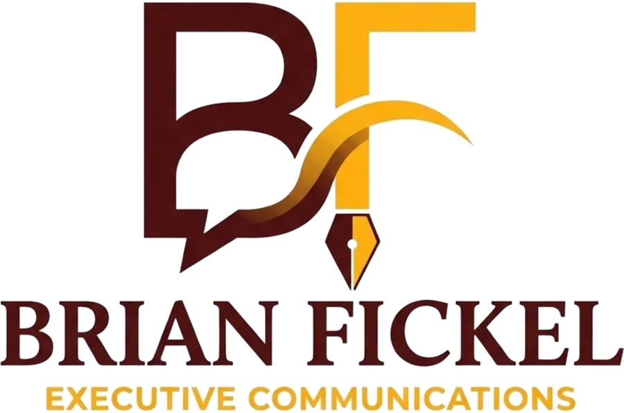

The craft of advising senior leaders.
Lessons and free tools for people who advise senior leaders.
About
Brian Fickel
I’ve spent almost 20 years advising senior leaders on communication. I started as a speechwriter, worked as a spokesperson, and spent most of my career as the communications advisor to commanders at the division, corps, combatant command and service-chief levels. Some of that was in Washington. A lot of it was in Iraq and Afghanistan.
I went to school for part of it. Georgetown taught me public relations and corporate communications, and the Army War College taught me strategy. I read constantly and paid attention to the advisors I respected. The rest I learned the hard way: advice my boss got from me a day late, a message that was textbook right but still wrong for the situation, and experiences that taught me more in a week than a semester could.
Over time I figured out that the part of the job I enjoyed most was developing the people around me. I now teach senior leader communication, and I built this site to share the lessons and tools I wish someone had given me earlier.
This is a passion project. Everything here is free. I don’t offer services and I don’t make money from it.
Focus
What you’ll find here
Most of what I know about advising I learned on the job. I think a good share of it can be taught, and that’s what this site is for.
Advising senior leaders
How to earn a leader’s trust, frame a decision, and bring bad news early enough to do something about it.
Teaching the craft
Lessons and case studies on advising senior leaders, written from my own experience. I’ll add them here as I go.
Practitioner tools
Free checklists and worksheets for advisors and communicators. They run in your browser, so nothing you type leaves your computer.